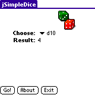
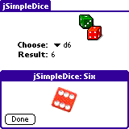
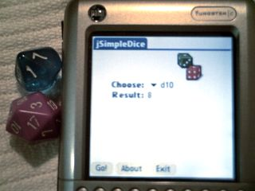
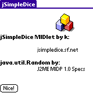

WIP
Download: single package with source and binaries (jar, jad and prc)
A simple dice simulator using java.util.Random.
  Requires J2ME for Palm (JavaHQ 1.0 available at java.sun.com).
Available options: d10, d6, 'd3' (janken-pon) and 'd2' (flip coin).
I've tested it on color devices only, I don't guarantee it works otherwise. Hi-Res recommended!
Everything provided here is under the GNU/GPL license.
To generate the PRC using midp4palm1.0:
java -cp "/full_path_to/Converter.jar" com.sun.midp.palm.database.MakeMIDPApp
-jad jSimpleDice.jad -icon dice.bmp -smallicon ydice.bmp
-longname "jSimpleDice" -creator kJSD
-outfile jSD.prc jSimpleDice.jar
The icon bmps must be 1 bit (black and white).
Can you find the easter egg?
package net.sf.jsimpledice;
import java.io.IOException;
import java.util.Random;
import javax.microedition.lcdui.Alert;
import javax.microedition.lcdui.AlertType;
import javax.microedition.lcdui.Canvas;
import javax.microedition.lcdui.Choice;
import javax.microedition.lcdui.ChoiceGroup;
import javax.microedition.lcdui.Command;
import javax.microedition.lcdui.CommandListener;
import javax.microedition.lcdui.Display;
import javax.microedition.lcdui.Displayable;
import javax.microedition.lcdui.Form;
import javax.microedition.lcdui.Graphics;
import javax.microedition.lcdui.Image;
import javax.microedition.lcdui.ImageItem;
import javax.microedition.lcdui.Item;
import javax.microedition.lcdui.ItemStateListener;
import javax.microedition.lcdui.StringItem;
import javax.microedition.midlet.MIDlet;
import javax.microedition.midlet.MIDletStateChangeException;
/*
* JSimpleDice: A simple dice simulator.
*
* Changes since first release: rewritten to make the code more legible </p>
*
* development time: almost 4 days! (my first MIDlet!) </p>
*
* Thanks to: My brother for the janken-pon and "dice bias ratings"
* Eric for the easy-to-understand animation class Tyler Akins for D&D
* Helper that gave me algorithm ideas
*
* No thanks to: Palm for not supporting developments and developers Palm for
* taking so long to support MIDP 2.0 Palm for... all the dumb things and
* mistakes of the platform.
*
* This program is under GNU GPL License http://www.gnu.org for information.
*
*/
public class JSimpleDiceMIDlet extends MIDlet implements CommandListener,
ItemStateListener
{
/**
* Animation class by Eric Giguere as seen on developers.sun
* <p>
* Modifications: added Thread.sleep before call to serialization else it
* runs too fast for jSimpleDice 2 frames.
* </p>
*/
private static class Animation extends Canvas implements Runnable
{
private Display display;
private Image[] frames;
private boolean go = false;
private int next = 0;
public Animation(Image[] frames, Display display) {
this.display = display;
this.frames = frames;
}
protected void paint(Graphics g)
{
g.drawImage(frames[next], 30, 20, Graphics.TOP | Graphics.LEFT);
}
// called after previous repaint
public void run()
{
if (go) {
if (++next >= frames.length)
next = 0;
repaint();
try {
Thread.sleep(100);
} catch (InterruptedException e) {
throw new JSimpleDiceException(EXCEPTION_MSG
+ e.getMessage());
}
display.callSerially(this);
}
}
public void startAnimation()
{
go = true;
repaint();
try {
Thread.sleep(100);
} catch (InterruptedException e) {
throw new JSimpleDiceException(EXCEPTION_MSG + e.getMessage());
}
display.callSerially(this);
}
public void stopAnimation()
{
go = false;
}
}
private static class JSimpleDiceException extends RuntimeException
{
public JSimpleDiceException() {
super();
}
public JSimpleDiceException(String arg0) {
super(arg0);
}
}
private static final String EXCEPTION_MSG = "Oops, an error has ocurred.";
private static final String IMG_ABOUT = "/img/devicon.png";
private static final String IMG_HEADS = "/img/heads.png";
private static final String IMG_LOGO = "/img/dices.png";
private static final String IMG_TAILS = "/img/tails.png";
private static final String IMG_TREASURE = "/img/tc1.png";
private static final String IMG_TREASURE2 = "/img/tc2.png";
private Command aboutCommand;
private ChoiceGroup cg;
private int choice = 6;
private Display display; // The display for this MIDlet
private int easter = 0;
private Command exitCommand;
private Form form;
private Command homeCommand;
private Image img;
private int result = 0;
private Command rollCommand;
private StringItem stringItem = new StringItem("Result: ", "?");
{
form = new Form("");
cg = new ChoiceGroup("Choose: ", Choice.EXCLUSIVE, new String[] {
"d10", "d6", "Janken-pon", "Flip Coin" }, null);
}
public JSimpleDiceMIDlet() {
display = Display.getDisplay(this);
rollCommand = new Command("Go!", Command.SCREEN, 1);
aboutCommand = new Command("About", Command.SCREEN, 2);
exitCommand = new Command("Exit", Command.SCREEN, 2);
homeCommand = new Command("Nice!", Command.SCREEN, 1);
}
/*
* Respond to commands.
*/
public void commandAction(Command cmd, Displayable d)
{
if (cmd == exitCommand) {
exitMIDlet();
}
if (cmd == rollCommand) {
nroll();
/*
* Easter Egg! After 99 rolls, displays a treasure animation!
*/
showEaster();
easter++;
}
if (cmd == homeCommand) {
display.setCurrent(form);
}
if (cmd == aboutCommand) {
try {
img = Image.createImage(IMG_ABOUT);
} catch (IOException e) {
throw new JSimpleDiceException(EXCEPTION_MSG + e.getMessage());
}
showAbout();
}
}
public void d6()
{
showResultImage();
}
/**
* Destroy must cleanup everything not handled by the garbage collector.
*/
protected void destroyApp(boolean unconditional)
throws MIDletStateChangeException
{
exitMIDlet();
}
private void displayForm(ImageItem logo)
{
form.append(logo);
form.append(cg);
form.setItemStateListener(this);
form.append(stringItem);
form.addCommand(rollCommand);
form.addCommand(aboutCommand);
form.addCommand(exitCommand);
form.setCommandListener(this);
display.setCurrent(form);
}
public void exitMIDlet()
{
notifyDestroyed();
}
public String flipcoin()
{
Alert alert = null;
String s = "";
switch (result) {
case 1:
try {
img = Image.createImage(IMG_HEADS);
} catch (IOException e) {
throw new JSimpleDiceException(EXCEPTION_MSG + e.getMessage());
}
s = "Heads";
break;
default:
try {
img = Image.createImage(IMG_TAILS);
} catch (IOException e) {
throw new JSimpleDiceException(EXCEPTION_MSG + e.getMessage());
}
s = "Tails";
break;
}
alert = new Alert(s, null, img, AlertType.INFO);
alert.setTimeout(Alert.FOREVER);
display.setCurrent(alert, form);
return s;
}
public Display getDisplay()
{
return display;
}
/**
* required for the interface, detects ChoiceGroup selection
*/
public void itemStateChanged(Item item)
{
int iindex = cg.getSelectedIndex();
switch (iindex) {
case 0:
choice = 10;
break;
case 1:
choice = 6;
break;
case 2:
choice = 3;
break;
case 3:
choice = 2;
}
}
public String janken()
{
Alert alert = null;
String s = "";
switch (result) {
case 1:
s = "Paper";
break;
case 2:
s = "Rock";
break;
default:
s = "Scissors";
break;
}
try {
img = Image.createImage("/img/" + s.toLowerCase() + ".png");
} catch (IOException e) {
e.printStackTrace();
}
alert = new Alert(s, null, img, AlertType.CONFIRMATION);
alert.setTimeout(Alert.FOREVER);
display.setCurrent(alert, form);
return s;
}
/**
* Generates the random number depending on selection
*/
public void nroll()
{
Random r = new Random();
result = r.nextInt(); // r.nextInt(int) unavailable (midp 1.0)
if (result < 0)
result *= -1; // as it is signed
result %= choice;
result++;
String s = String.valueOf(result);
switch (choice) {
case 2:
flipcoin();
break;
case 3:
janken();
break;
case 6:
d6();
break;
}
stringItem.setText(s);
}
/**
* Pause is a no-op since there are no background activities or record
* stores that need to be closed.
*/
public void pauseApp()
{
}
private void showAbout()
{
Form about = new Form("");
about.append(new ImageItem(null, img, ImageItem.LAYOUT_NEWLINE_AFTER
| ImageItem.LAYOUT_NEWLINE_BEFORE | ImageItem.LAYOUT_CENTER,
null));
about.append(new StringItem("jSimpleDice MIDlet by k", null));
about.append("\njsimpledice.sf.net");
about.append(new StringItem("\njava.util.Random by",
"J2ME MIDP 1.0 Specs"));
about.addCommand(homeCommand);
about.setCommandListener(this);
display.setCurrent(about);
}
private void showEaster()
{
if (easter > 99) {
easter = 0;
try {
Image[] images = new Image[2];
images[0] = Image.createImage(IMG_TREASURE);
images[1] = Image.createImage(IMG_TREASURE2);
Animation ac = new Animation(images, getDisplay());
Alert alert = new Alert(" You found a treasure!", null, null,
AlertType.ALARM);
alert.setTimeout(5000);
display.setCurrent(alert, ac);
ac.addCommand(homeCommand);
ac.setCommandListener(this);
ac.startAnimation();
} catch (IOException e) {
throw new JSimpleDiceException(EXCEPTION_MSG + e.getMessage());
}
}
}
private void showResultImage()
{
try {
img = Image.createImage("/img/" + result + ".png");
} catch (IOException e) {
throw new JSimpleDiceException(EXCEPTION_MSG + e.getMessage());
}
Alert alert = new Alert(String.valueOf(result), null, img,
AlertType.INFO);
alert.setTimeout(Alert.FOREVER);
display.setCurrent(alert, form);
}
public void startApp()
{
try {
Image image = Image.createImage(IMG_LOGO);
ImageItem logo = new ImageItem(null, image, ImageItem.LAYOUT_CENTER
| ImageItem.LAYOUT_NEWLINE_BEFORE
| ImageItem.LAYOUT_NEWLINE_AFTER, "Dice");
displayForm(logo);
} catch (IOException e) {
System.err.println("Logo not available! ");
e.printStackTrace();
} catch (JSimpleDiceException e) {
System.err.println("Unrecoverable error! ");
e.printStackTrace();
}
}
}